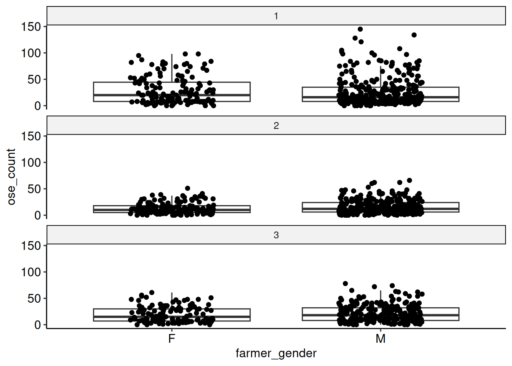
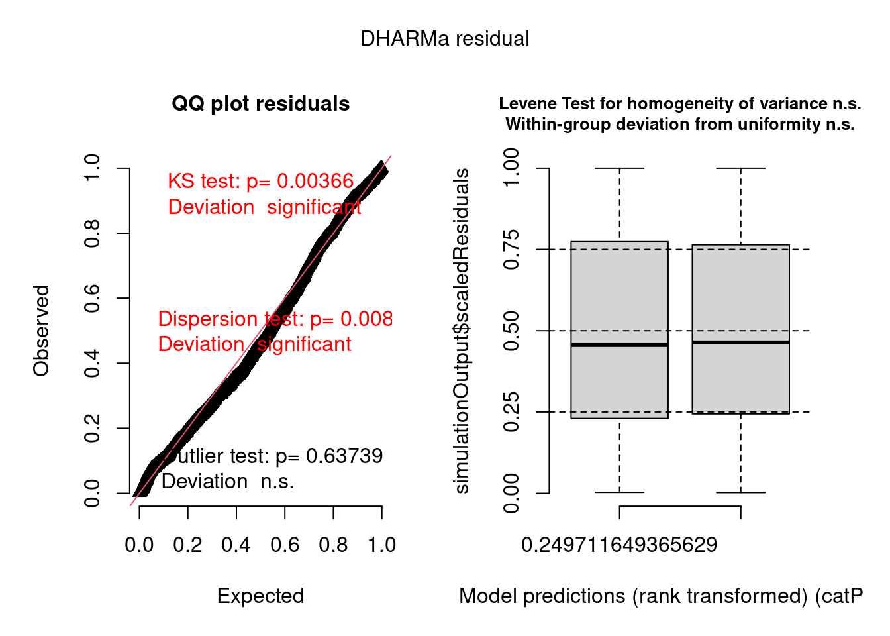
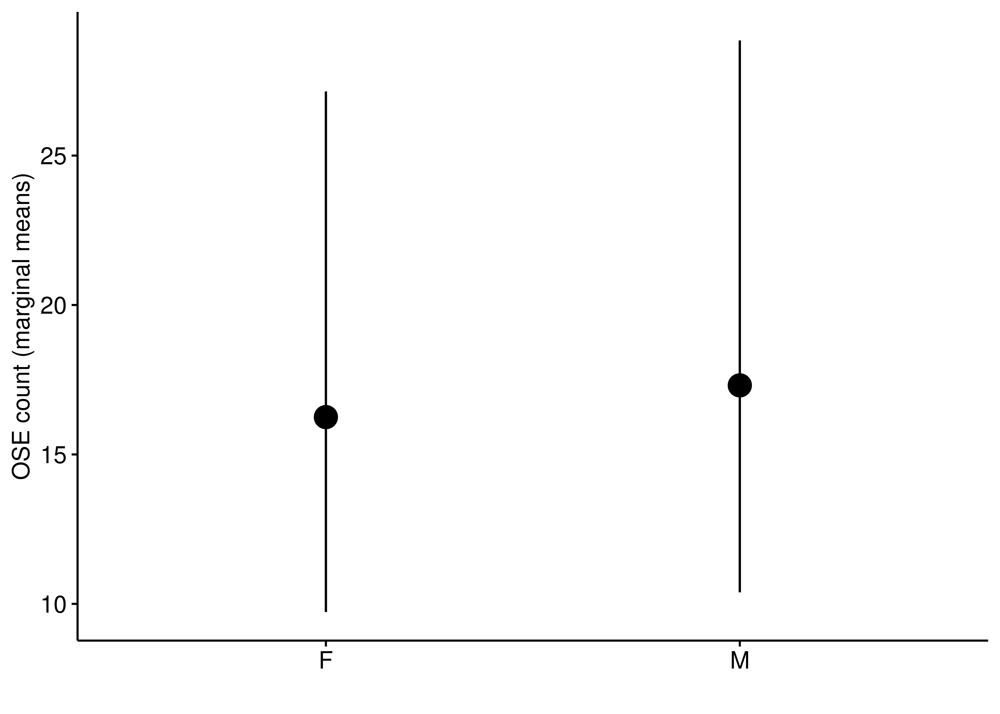
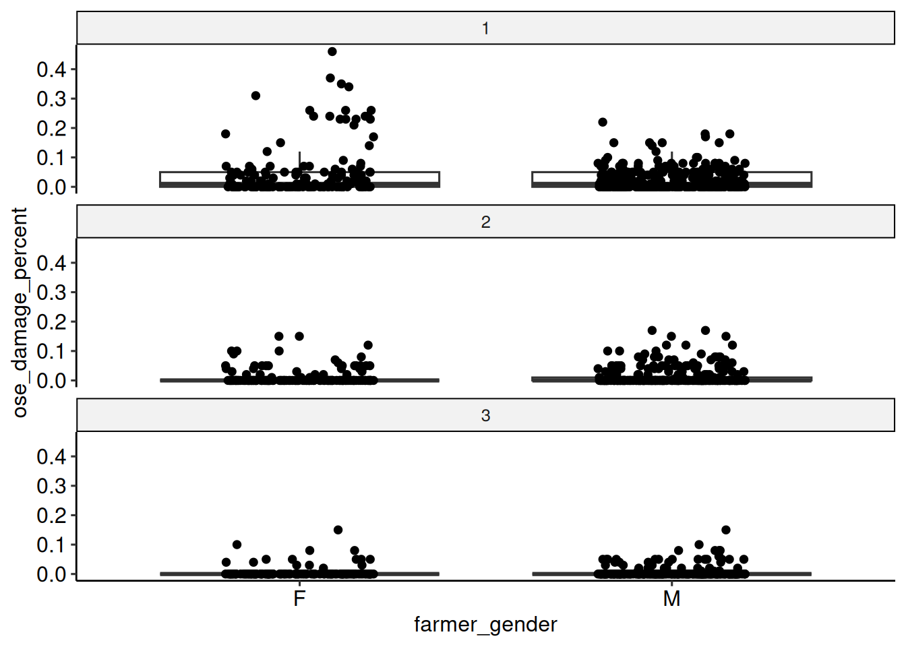
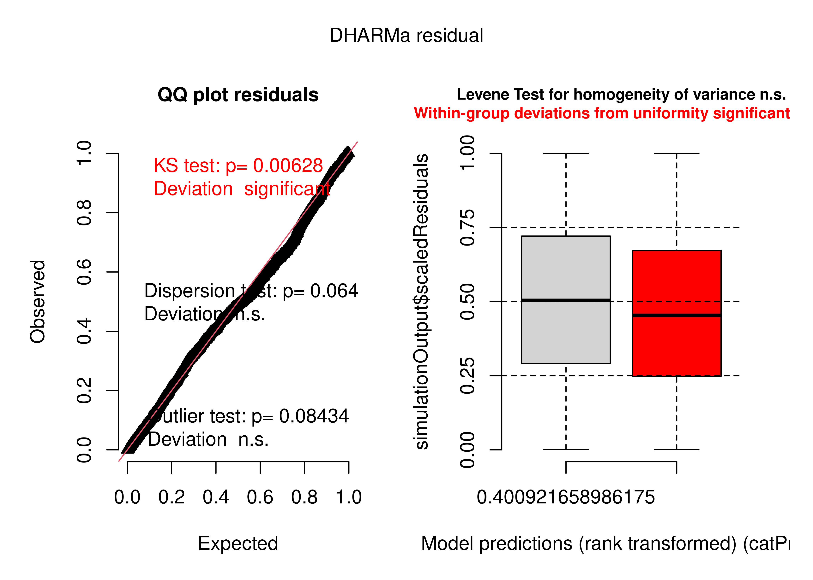
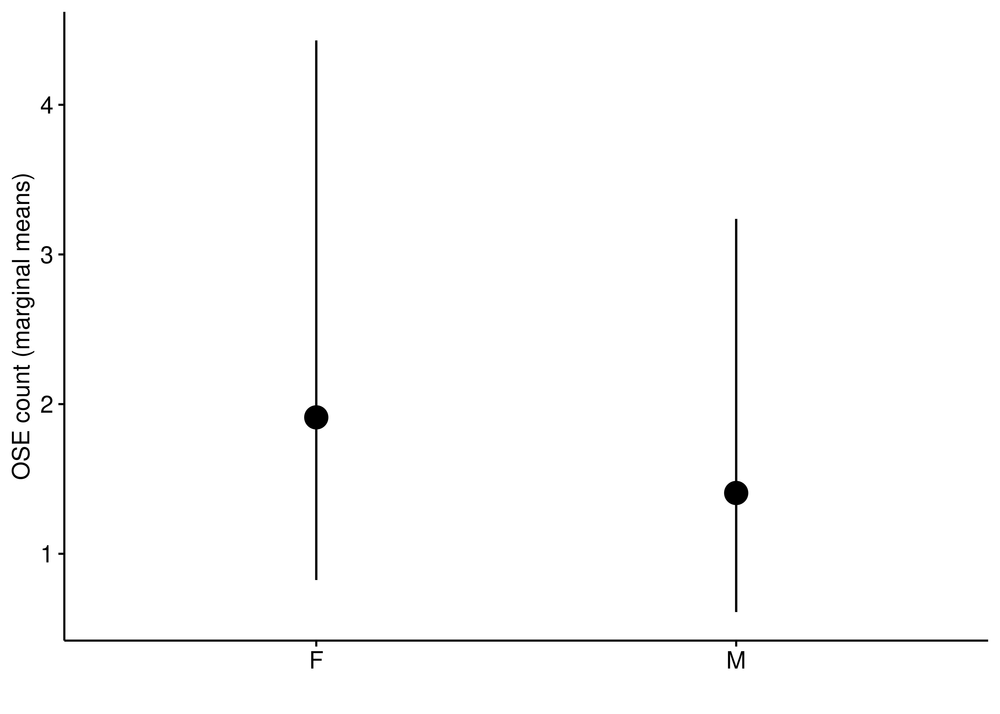
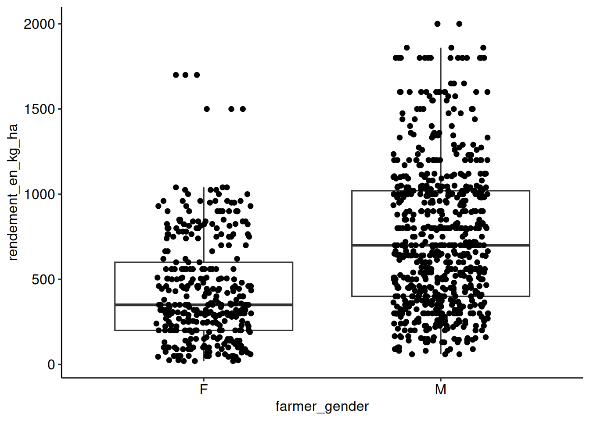
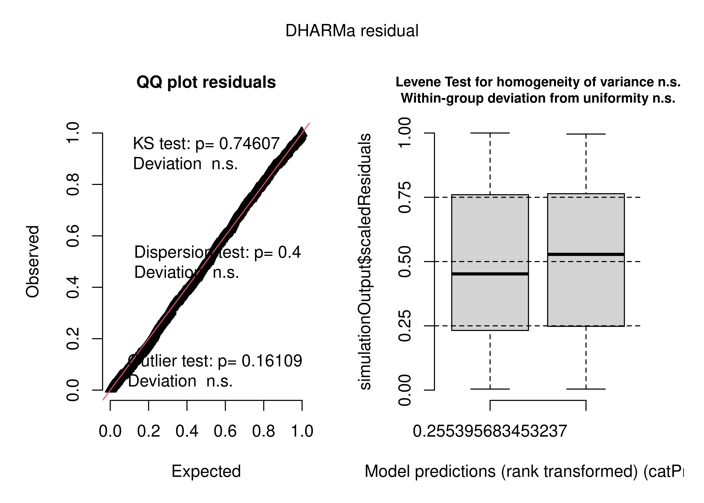
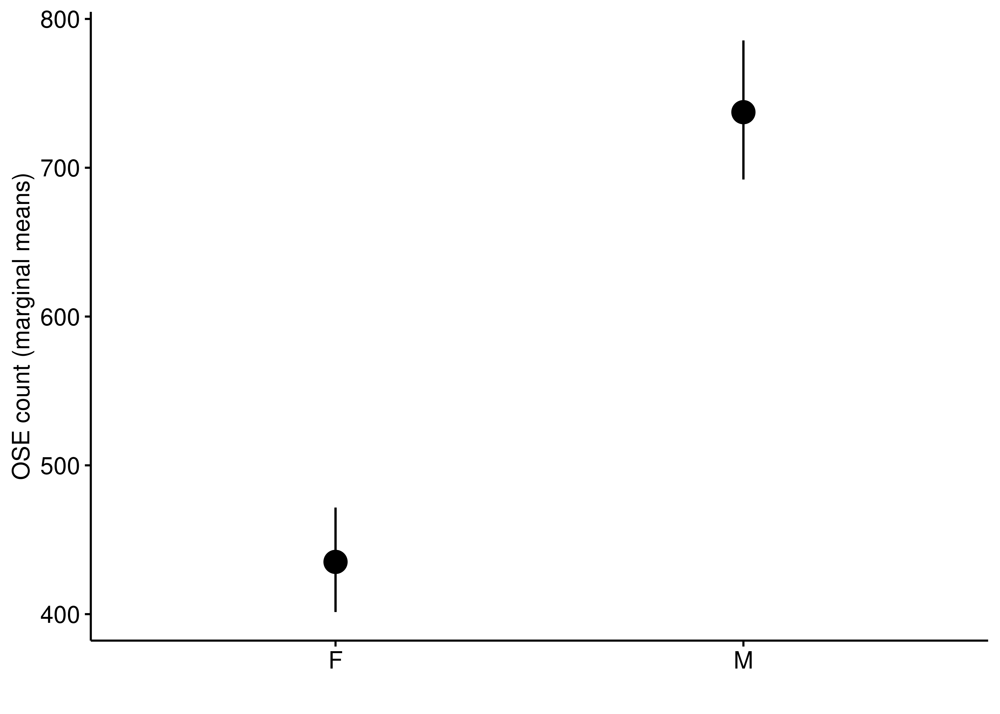

2021 Farmer gender analysis
NoteExploratory Work
This page contains exploratory analysis conducted during the development of the manuscript. These analyses informed our statistical approach and data management decisions. Not all content here appears in the final manuscript. For the final methods and results, see the Methods and Results page.
Summary
The goal of this page is to analyze the difference between OSE count, damage and millet between farmer gender.
TLDR:
no significant impact of gender on OSE count
Male farmers had lower locust damage than female farmers
Female farmers had lower yield than male farmers
OSE count analysis
There doesnt seem to be a big difference between farmer gender and density. A poisson model was insigificant.
I will create a quick poisson glmm with mission_number as a random effect and farmer gender as a fixed effect to see if there is a difference between male and female farmer.
Family: tweedie ( log )
Formula:
ose_count ~ farmer_gender + (1 | region) + (1 | mission_number)
Data: data
AIC BIC logLik -2*log(L) df.resid
10180.2 10211.3 -5084.1 10168.2 1295
Random effects:
Conditional model:
Groups Name Variance Std.Dev.
region (Intercept) 0.18469 0.4298
mission_number (Intercept) 0.06303 0.2511
Number of obs: 1301, groups: region, 4; mission_number, 3
Dispersion parameter for tweedie family (): 2.33
Conditional model:
Estimate Std. Error z value Pr(>|z|)
(Intercept) 2.78805 0.26183 10.648 <2e-16 ***
farmer_genderM 0.06330 0.04305 1.471 0.141
---
Signif. codes: 0 '***' 0.001 '**' 0.01 '*' 0.05 '.' 0.1 ' ' 1

OSE damage

I will create a quick poisson glmm with mission_number as a random effect and farmer gender as a fixed effect to see if there is a statistical significance.
Family: tweedie ( log )
Formula:
ose_damage_percent ~ farmer_gender + (1 | region) + (1 | mission_number)
Data: data
AIC BIC logLik -2*log(L) df.resid
-173.9 -142.9 92.9 -185.9 1294
Random effects:
Conditional model:
Groups Name Variance Std.Dev.
region (Intercept) 0.2322 0.4818
mission_number (Intercept) 0.4247 0.6517
Number of obs: 1300, groups: region, 4; mission_number, 3
Dispersion parameter for tweedie family (): 0.194
Conditional model:
Estimate Std. Error z value Pr(>|z|)
(Intercept) -4.1792 0.4562 -9.162 < 2e-16 ***
farmer_genderM -0.3018 0.1047 -2.883 0.00394 **
---
Signif. codes: 0 '***' 0.001 '**' 0.01 '*' 0.05 '.' 0.1 ' ' 1

Millet Yield

Family: tweedie ( log )
Formula:
rendement_en_kg_ha ~ farmer_gender + (1 | region) + (1 | mission_number)
Data: yield_dat
AIC BIC logLik -2*log(L) df.resid
15025.9 15055.5 -7506.9 15013.9 1029
Random effects:
Conditional model:
Groups Name Variance Std.Dev.
region (Intercept) 1.466e-03 3.829e-02
mission_number (Intercept) 6.512e-10 2.552e-05
Number of obs: 1035, groups: region, 3; mission_number, 3
Dispersion parameter for tweedie family (): 2.52
Conditional model:
Estimate Std. Error z value Pr(>|z|)
(Intercept) 6.07561 0.04112 147.74 <2e-16 ***
farmer_genderM 0.52745 0.04178 12.63 <2e-16 ***
---
Signif. codes: 0 '***' 0.001 '**' 0.01 '*' 0.05 '.' 0.1 ' ' 1
